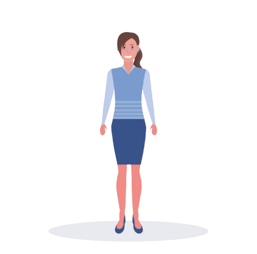
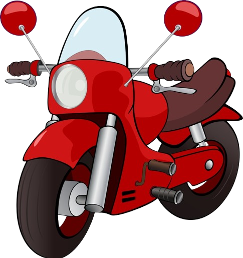
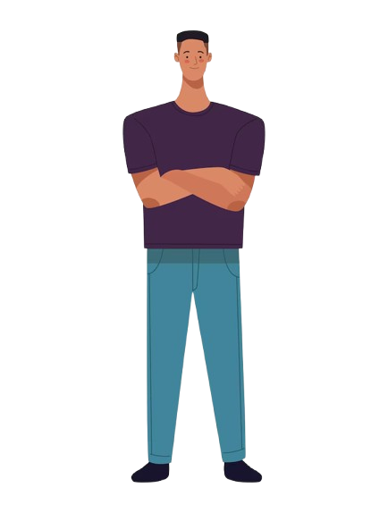

Seminggu kemudian, pihak bank datang ke Brady untuk mengecek dan memverifikasi motornya.
"Honda Vario tahun 2018. Di pajak sekarang dibanderol 12 juta."



Setelah itu, uang pinjaman Brady cair dan dia bisa membayar kuliahnya. Menurutmu, apa kelebihan dan kekurangan menggunakan pinjaman dengan agunan seperti ini?